import matplotlib.pyplot as plt
plt.style.use('classic')
import numpy as np
%matplotlib inlineMatplotlib 사용자 정의: 구성 및 스타일시트
이전 장에서 다룬 많은 주제에는 플롯 요소의 스타일을 하나씩 조정하는 것이 포함되어 있지만 Matplotlib은 차트의 전체 스타일을 한 번에 조정하는 메커니즘도 제공합니다. 이번 장에서는 Matplotlib의 런타임 구성(rc) 옵션 중 일부를 살펴보고 몇 가지 멋진 기본 구성 세트가 포함된 스타일시트 기능을 살펴보겠습니다.
직접 플롯 사용자 정의
책의 이 부분 전체에서 개별 플롯 설정을 조정하여 기본 설정보다 조금 더 보기 좋게 만드는 방법을 살펴보았습니다. 각 개별 플롯에 대해 이러한 사용자 정의를 수행하는 것도 가능합니다. 예를 들어 다음 그림은 상당히 단조로운 기본 히스토그램입니다.
x = np.random.randn(1000)
plt.hist(x);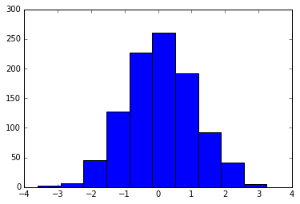
다음 그림에서 볼 수 있듯이 이를 수동으로 조정하여 시각적으로 훨씬 더 즐거운 플롯을 만들 수 있습니다.
# use a gray background
fig = plt.figure(facecolor='white')
ax = plt.axes(facecolor='#E6E6E6')
ax.set_axisbelow(True)
# draw solid white gridlines
plt.grid(color='w', linestyle='solid')
# hide axis spines
for spine in ax.spines.values():
spine.set_visible(False)
# hide top and right ticks
ax.xaxis.tick_bottom()
ax.yaxis.tick_left()
# lighten ticks and labels
ax.tick_params(colors='gray', direction='out')
for tick in ax.get_xticklabels():
tick.set_color('gray')
for tick in ax.get_yticklabels():
tick.set_color('gray')
# control face and edge color of histogram
ax.hist(x, edgecolor='#E6E6E6', color='#EE6666');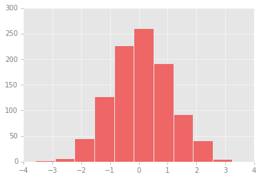
이것은 더 좋아 보이며 R 언어의 ggplot 시각화 패키지에서 영감을 받은 모양임을 확인합니다. 그러나 이것은 많은 노력이 필요했습니다! 우리는 플롯을 생성할 때마다 모든 조정 작업을 수행하고 싶지는 않습니다. 다행히 모든 플롯에 적용되는 방식으로 이러한 기본값을 한 번 조정할 수 있는 방법이 있습니다.
기본값 변경: rcParams
Matplotlib이 로드될 때마다 생성하는 모든 플롯 요소에 대한 기본 스타일을 포함하는 런타임 구성을 정의합니다. 이 구성은 plt.rc 편의 루틴을 사용하여 언제든지 조정합니다. 기본 플롯이 이전에 했던 것과 유사하게 보이도록 rc 매개변수를 수정하는 방법을 살펴보겠습니다.
‘plt.rc’ 함수를 사용하여 이러한 설정 중 일부를 변경합니다:
from matplotlib import cycler
colors = cycler('color',
['#EE6666', '#3388BB', '#9988DD',
'#EECC55', '#88BB44', '#FFBBBB'])
plt.rc('figure', facecolor='white')
plt.rc('axes', facecolor='#E6E6E6', edgecolor='none',
axisbelow=True, grid=True, prop_cycle=colors)
plt.rc('grid', color='w', linestyle='solid')
plt.rc('xtick', direction='out', color='gray')
plt.rc('ytick', direction='out', color='gray')
plt.rc('patch', edgecolor='#E6E6E6')
plt.rc('lines', linewidth=2)이러한 설정을 정의하면 이제 플롯을 생성하고 설정이 실제로 실행되는 것을 볼 수 있습니다(다음 그림 참조).
plt.hist(x);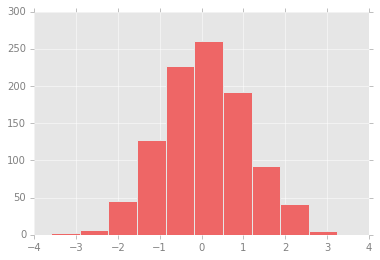
이러한 rc 매개변수를 사용하여 간단한 선 그래프가 어떻게 보이는지 살펴보겠습니다(다음 그림 참조).
for i in range(4):
plt.plot(np.random.rand(10))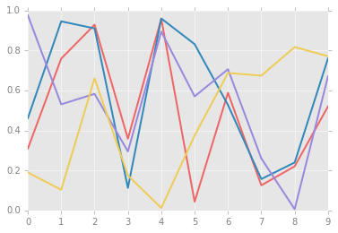
인쇄된 차트가 아닌 화면상으로 보는 차트의 경우 기본 스타일보다 미학적으로 훨씬 더 만족스럽습니다. 제 미적 감각에 동의하지 않으신다면, 좋은 소식은 자신의 취향에 맞게 rc 매개변수를 조정할 수 있다는 것입니다! 선택적으로 이러한 설정을 .matplotlibrc 파일에 저장합니다. 이 파일은 Matplotlib 문서에서 읽을 수 있습니다.
스타일시트
전체 차트 스타일을 조정하는 새로운 메커니즘은 Matplotlib의 style 모듈을 통해 이루어지며, 여기에는 다양한 기본 스타일시트는 물론 자신만의 스타일을 생성하고 패키징하는 기능도 포함되어 있습니다. 이러한 스타일시트는 앞서 언급한 .matplotlibrc 파일과 유사한 형식이지만 이름은 .mplstyle 확장자로 지정해야 합니다.
자신만의 스타일을 직접 만들지 않더라도 내장된 스타일시트에서 원하는 스타일을 찾을 수 있습니다. plt.style.available에는 사용 가능한 스타일 목록이 포함되어 있습니다. 여기서는 간결성을 위해 처음 5개만 나열하겠습니다.
plt.style.available[:5]['Solarize_Light2', '_classic_test_patch', 'bmh', 'classic', 'dark_background']스타일시트로 전환하는 표준 방법은 style.use를 호출하는 것입니다:
``파이썬 plt.style.use(‘스타일이름’)
하지만 이렇게 하면 나머지 파이썬(Python) 세션의 스타일이 변경된다는 점을 명심하세요!
또는 스타일을 임시로 설정하는 스타일 컨텍스트 관리자를 사용합니다.
``파이썬
plt.style.context('stylename') 사용:
make_a_plot()이러한 스타일을 보여주기 위해 두 가지 기본 유형의 플롯을 만드는 함수를 만들어 보겠습니다.
def hist_and_lines():
np.random.seed(0)
fig, ax = plt.subplots(1, 2, figsize=(11, 4))
ax[0].hist(np.random.randn(1000))
for i in range(3):
ax[1].plot(np.random.rand(10))
ax[1].legend(['a', 'b', 'c'], loc='lower left')이를 사용하여 다양한 내장 스타일을 사용하여 이러한 플롯이 어떻게 보이는지 살펴보겠습니다.
기본 스타일
Matplotlib의 ‘기본’ 스타일은 버전 2.0 릴리스에서 업데이트되었습니다. 먼저 이를 살펴보겠습니다(다음 그림 참조).
with plt.style.context('default'):
hist_and_lines()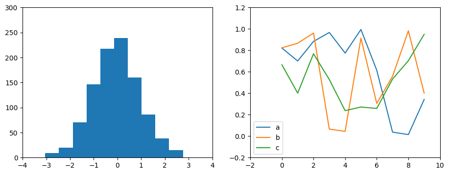
FiveThiryEight 스타일
‘fivethirtyeight’ 스타일은 인기 있는 FiveThirtyEight 웹사이트에서 볼 수 있는 그래픽을 모방합니다. 다음 그림에서 볼 수 있듯이 굵은 색상, 굵은 선, 투명한 축으로 대표됩니다.
with plt.style.context('fivethirtyeight'):
hist_and_lines()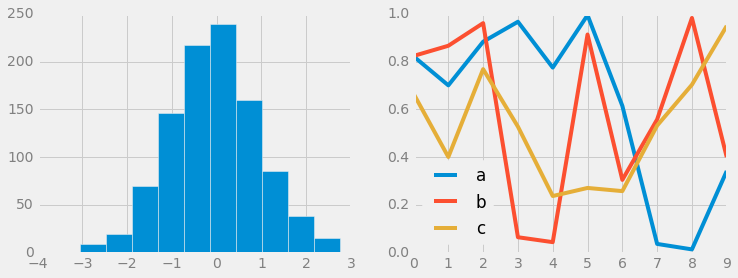
ggplot 스타일
R 언어의 ‘ggplot’ 패키지는 데이터 과학(Data Science)자들 사이에서 인기 있는 시각화 도구입니다. Matplotlib의 ggplot 스타일은 해당 패키지의 기본 스타일을 모방합니다(다음 그림 참조).
with plt.style.context('ggplot'):
hist_and_lines()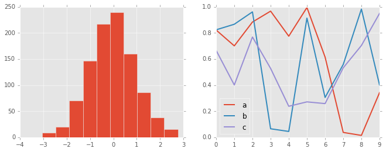
해커 스타일을 위한 베이지안 방법
Cameron Davidson-Pilon이 쓴 해커를 위한 확률론적 프로그래밍 및 베이지안 방법이라는 깔끔하고 짧은 온라인 책이 있습니다. 이 책은 Matplotlib로 만든 그림을 특징으로 하며 책 전체에서 일관되고 시각적으로 매력적인 스타일을 만들기 위해 멋진 rc 매개변수 세트를 사용합니다. 이 스타일은 bmh 스타일시트에 재현되어 있습니다(다음 그림 참조):
with plt.style.context('bmh'):
hist_and_lines()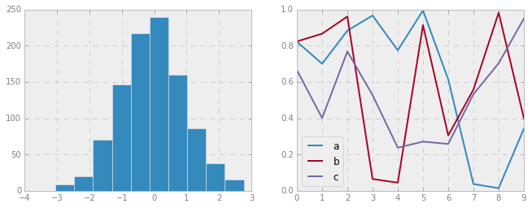
어두운 배경 스타일
프리젠테이션에 사용되는 그림의 경우 밝은 배경보다는 어두운 배경을 사용하는 것이 유용한 경우가 많습니다. dark_Background 스타일이 이를 제공합니다(다음 그림 참조):
with plt.style.context('dark_background'):
hist_and_lines()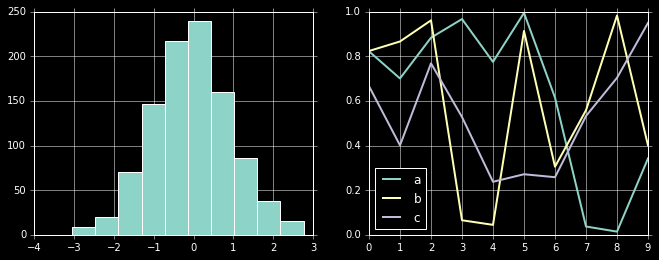
그레이스케일 스타일
때로는 컬러 그림을 허용하지 않는 인쇄 출판물을 위해 그림을 준비하는 경우도 있습니다. 이를 위해 ‘회색조’ 스타일(다음 그림 참조)이 유용합니다.
with plt.style.context('grayscale'):
hist_and_lines()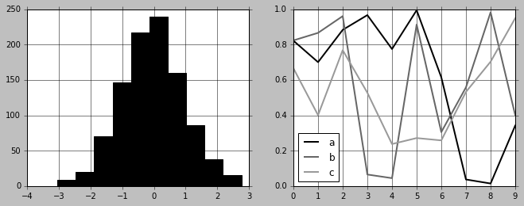
시본 스타일
Matplotlib에는 Seaborn 라이브러리에서 영감을 받은 여러 스타일시트도 있습니다(Visualization With Seaborn에서 자세히 설명). 저는 이러한 설정이 매우 좋다고 생각하며 제 데이터 탐색 시 기본값으로 사용하는 경향이 있습니다(다음 그림 참조).
with plt.style.context('seaborn-whitegrid'):
hist_and_lines()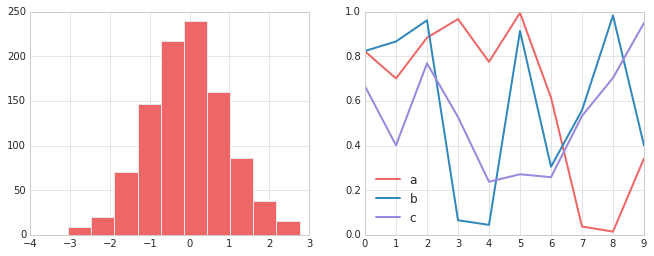
시간을 내어 내장된 옵션을 살펴보고 마음에 드는 옵션을 찾으세요! 이 책 전체에서 플롯을 만들 때 일반적으로 이러한 스타일 규칙 중 하나 이상을 사용합니다.